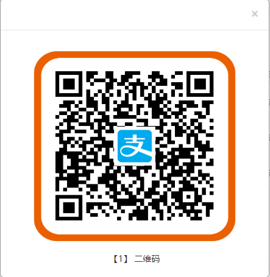
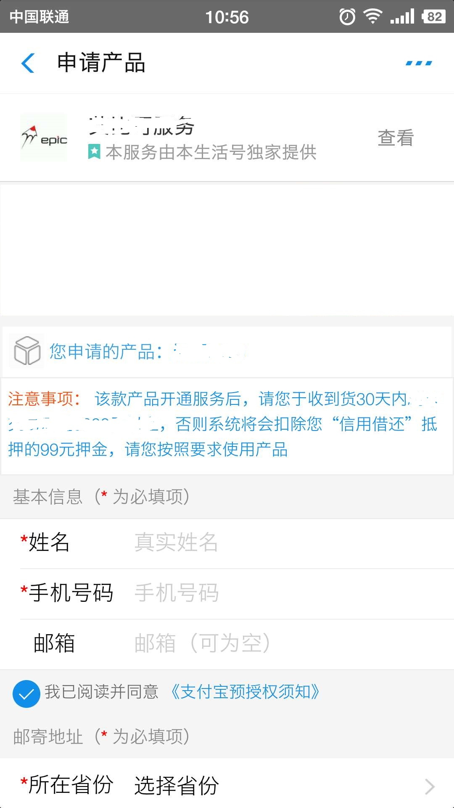
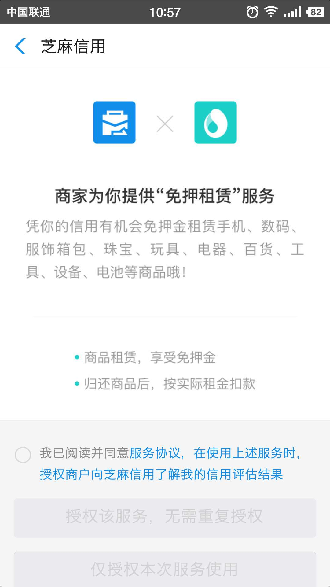
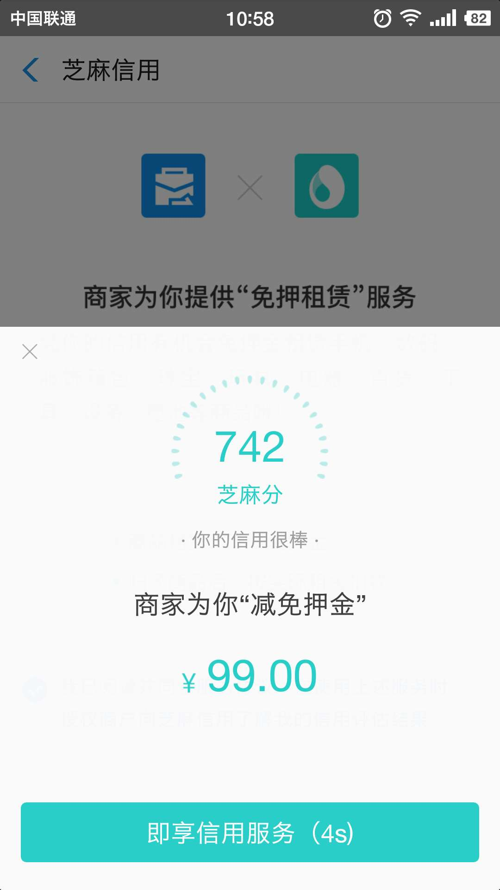
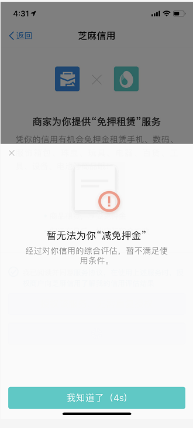
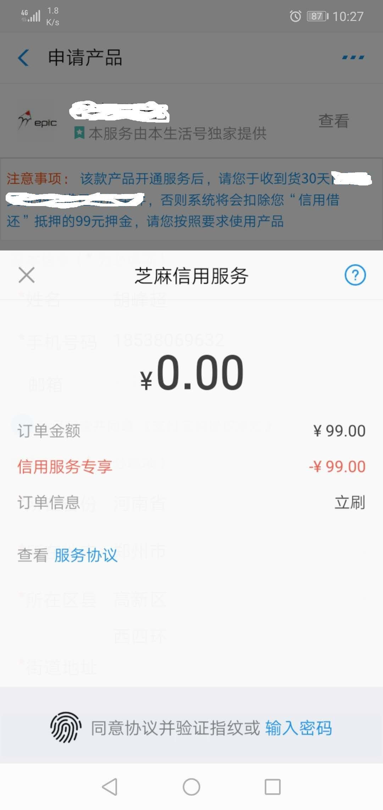
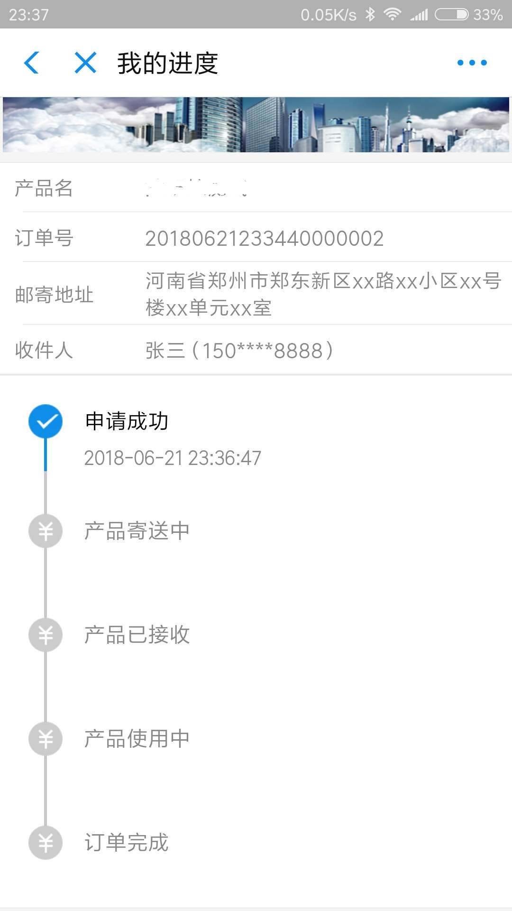
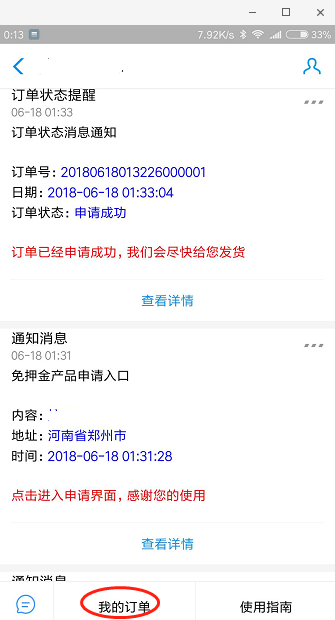
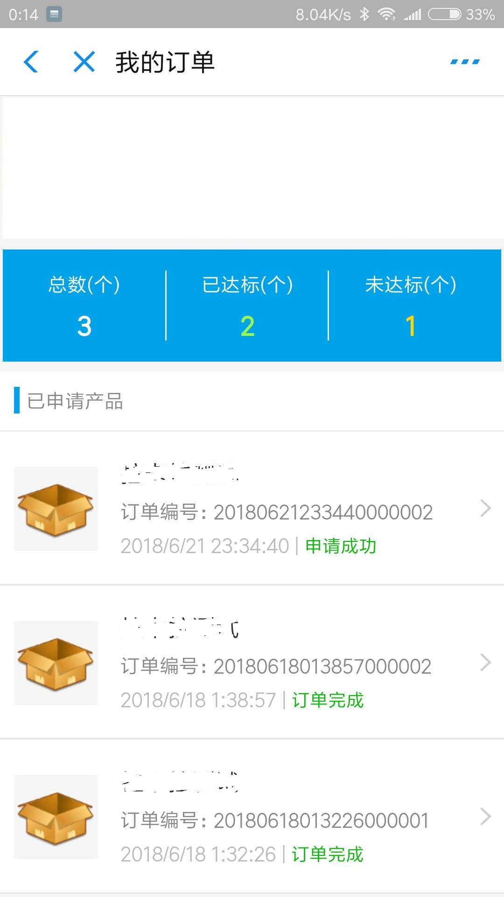
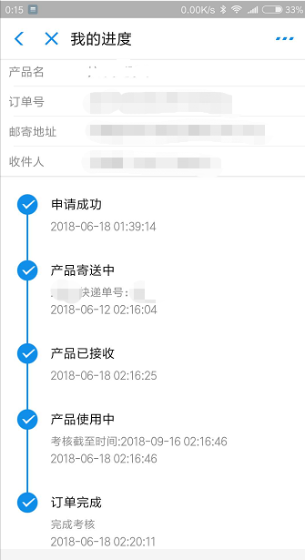

一、获取产品二维码
1.1、联系富卡客服人员获取您要申请的产品的二维码，并用支付宝客户端扫描二维码，二维码效果图1-1如下：

二、申请使用产品
2.1、用支付宝客户端扫描产品二维码，如果未关注【富卡服务中心】生活号第一次扫描系统会提醒您关注生活号，请您关注该生活号； 如果已关注过【富卡服务中心】生活号，后会自动跳转到【富卡服务中心】生活号内，并跳转到产品申请界面，如下图所示：

2.2、申请产品信息填写完毕后，阅读并同意《支付宝预授权须知》后，点击“确认申请”按钮，界面自动跳转到“免押租赁服务授权”界面，如下图2-3所示， 阅读并同意服务协议后，点击“免押租赁服务授权”按钮，即可享受免押金服务。

2.3、授权结束后会弹出押金减免提示框，如果提示商家为你“减免押金”（如下图2-3-1所示），则支付时免押金；如果提示暂无法为你“减免押金”（如下图2-3-2所示），则预授权支付界面需要支付押金。


2.4、免押授权验证结束后，会跳转到支付界面（如下图2-4-1所示），点击确认，本次申请完成

三、产品进度
3.1、在“确认信息”界面，仔细阅读租借物品、租借、押金、芝麻服务协议等信息无误后，点击“提交申请”， 系统自动跳转到“我的进度”界面，“我的进度”界面可以查看申请产品的整个进度情况，界面截图如3-1所示：

3.2、至此，整个申请产品的过程已经完成。接下来您需要耐心等待“富卡”服务人员把相关产品邮寄给您， 您收到产品后并请及时联系“富卡服务中心”服务人员开通产品相关服务，开通后，产品即可正常使用了。
四、我的订单
4.1、进入“富卡服务中心”生活号内，点击菜单“我的订单”，即可查看您所申请的所有产品，如下图4-1所示：

4.2、点击菜单“我的订单”后，进入您所申请的所有产品列表界面，如下图4-2所示：

4.3、在上述的产品列表界面，点击任意您所申请的产品条目，即可查看该产品的进度情况，如下图4-3所示：

4.4、至此，您申请产品后，可随时在“富卡服务中心”生活号内进入“我的订单”进行跟踪和了解该产品的进度情况。
本内容由“富卡服务中心”提供，如果有任何疑问请与“富卡服务中心”第一时间联系。